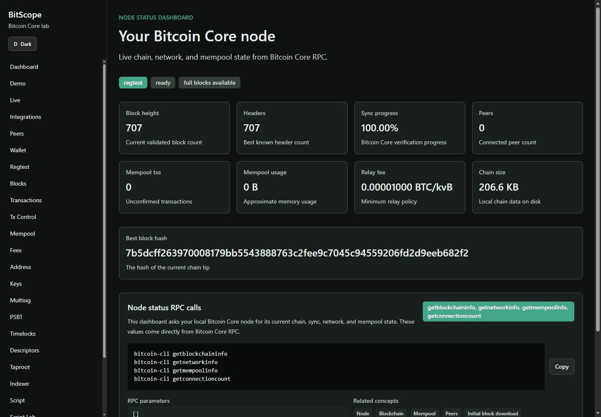
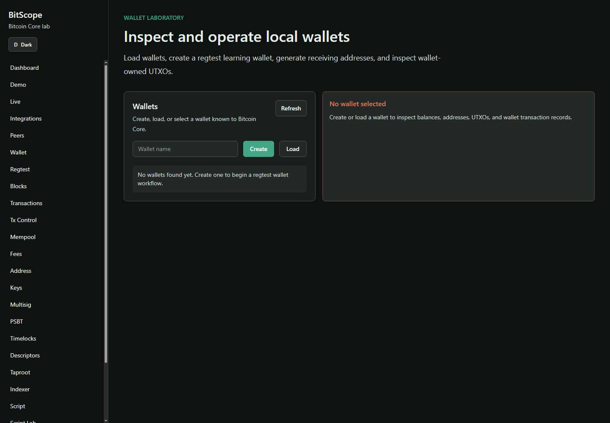
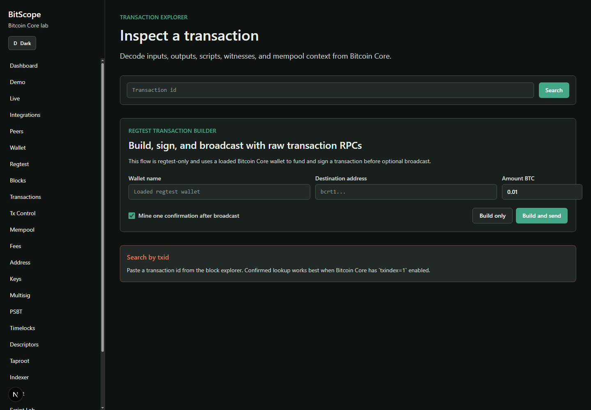
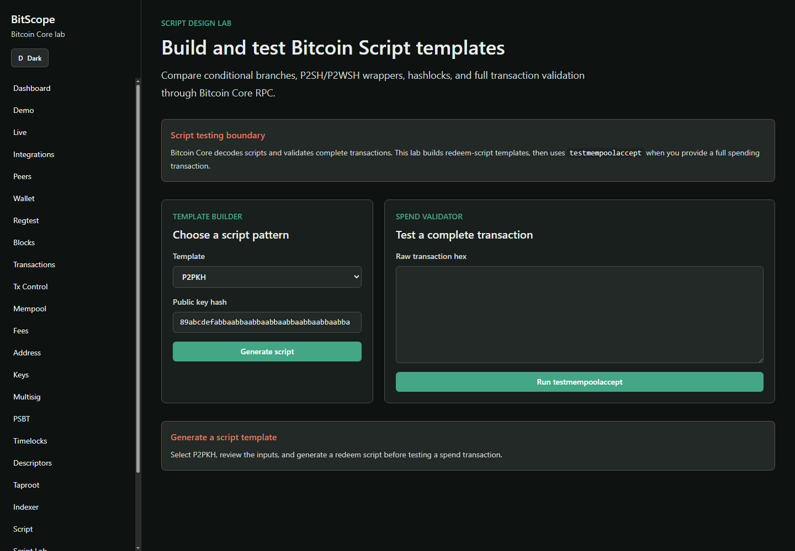
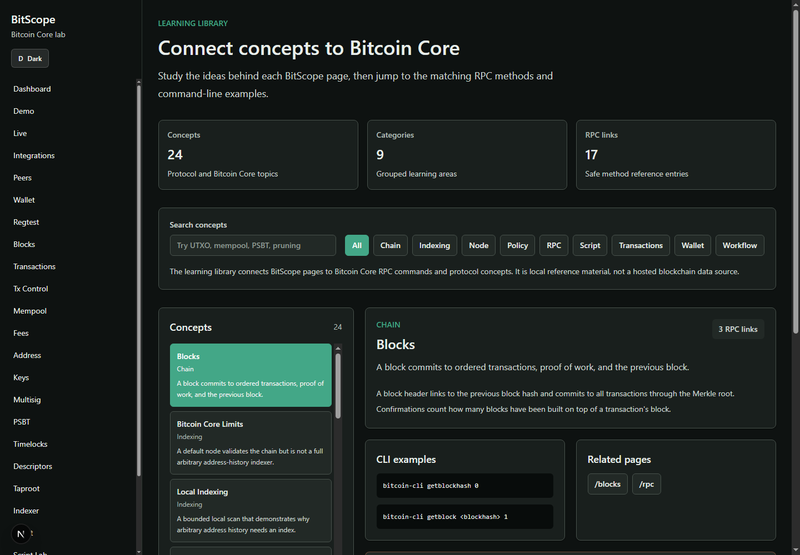

Screenshots
Interactive workflows, not a hosted explorer clone.
These screens show BitScope interacting with a local regtest node and pairing each UI result with command-line and JSON-RPC context.

Wallet lab

Transaction explorer

Script Lab

Learning library
Architecture
Hosted docs, local execution.
The public site is intentionally static. The real BitScope app runs locally because the backend talks to the user's Bitcoin Core RPC endpoint and keeps credentials server-side.
Frontend
Next.js pages for dashboards, labs, command explanations, and educational workflows.
Backend
FastAPI services translate Bitcoin Core RPC responses into friendly, secret-safe learning data.
Bitcoin Core
The user's own node remains the source of truth. No hosted blockchain APIs are used.
Run locally
Start with regtest.
git clone https://github.com/comwanga/BitScope
cd BitScope
.\scripts\compose.ps1 up --build
Open http://localhost:3000, then use Demo Mode to create a clean wallet, mine mature
regtest coins, send a transaction, decode script, and export the command trail.